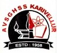

A V S G H S S KARIVELLUR
A V Smaraka Government Higher Secondary School Karivellur
OUR SCHOOL
We can make history but history moulds us for future. It was not a long since we have been
under the British rule.
If we glance at the history of Karivellur, we can see the Lord-Tenant system, which sowed the seeds of
resurrection among the
tenants and the downtrodden common folk. We the people of Karivellur also played a vital role in the
Freedom Struggle by dedicating
some of the martyr’s life for the sake of our motherland.
During their hardship also they dreamt of a school at high school level for brightening the future of
the coming generation.
Message
Our school has got prestigious legacy and we are proud of the historical
background since Karivellur is a land of peasant's
struggle and great resistance against imperialism and British rule and rule
of landlords. This school became a reality due
to extreme hardwork and dedication of our previous generation. It was established
in 1958 which was a single teacher school
and Sri. KTN Sukumaran Nambiar was in charge of this institution. Then it was
restructured
under the leaderdhip of Sri. AV Kunjambu,
the pioneer in the great Karivellur peasant's revolt in 1946. The common
people sacrificed their efforts for the development of this
institution and later it became a school with international infrastructure
facilities by the effort of our state government. In 1980 the
school was renamed as AV Smaraka GHSS Karivellur paying tribute to the great
leader Sri. AV Kunjambu. In 1992 it became an HSS. At present
nearly 1400 students are here. It became an international school in 2020. Now
with the proud of an active PTA and with the support of previous
batch students, trying to maintain the rich legacy.
Special Events
NSS CAMP UNIT-154